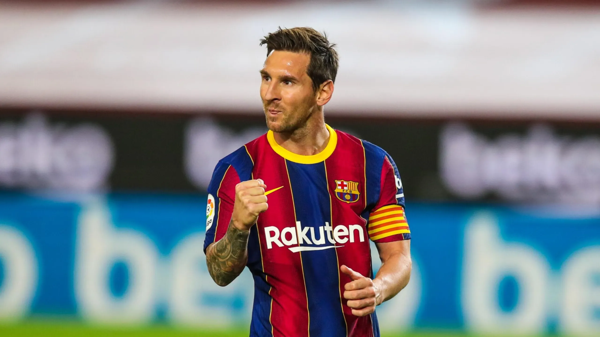

Lionel Messi (Rosario, 24 de junio de 1987), conocido como Leo Messi, es un futbolista argentino que juega como delantero o centrocampista y su equipo actual es el Inter Miami de la MLS de Estados Unidos. Es internacional con la selección de Argentina, equipo del que también es capitán.
Es el jugador con más títulos y premios oficiales, tanto individuales como colectivos, en toda la historia del fútbol profesional. Con el Fútbol Club Barcelona, al que estuvo ligado por más de veinte años, logró 35 títulos, entre ellos, diez de La Liga, cuatro de la Liga de Campeones de la UEFA y siete de la Copa del ReyGoleador prolífico, ostenta, entre otros, los récords por más goles en una temporada, en un mismo club y en un año calendario. Es, además, el máximo goleador histórico del Barcelona y de la selección argentina, de La Liga, la Supercopa de España, la Supercopa de Europa y el jugador no europeo con más goles en la Liga de Campeones de la UEFA.Nacido y criado en la ciudad de Rosario, a los 13 años se radicó en España, donde el Barcelona accedió a pagar el tratamiento de la enfermedad hormonal que le habían diagnosticado de niño. Después de una rápida progresión por la Academia juvenil del Barcelona, hizo su debut oficial con el primer equipo en octubre de 2004, a los diecisiete años . A pesar de ser propenso a lesiones en los inicios de su carrera, ya en 2006 se estableció como jugador fundamental para el club. Su primera campaña ininterrumpida fue la temporada 2008-09, en la que el Barcelona alcanzó el primer triplete del fútbol español. Por su estilo de juego de pequeño driblador zurdo,pronto se lo comparó con su compatriota Diego Maradona quien, en 2007, lo declaró su «sucesor».
Lionel Andrés Messi nació el 24 de junio de 1987 en el Hospital Italiano Garibaldi de la ciudad de Rosario, en la provincia de Santa Fe. Es el tercer hijo de Jorge Horacio Messi y Celia María Cuccittini. Tiene dos hermanos mayores, Rodrigo y Matías, y una hermana menor, María Sol. Su familia paterna es originaria del municipio italiano de Recanati, de donde su bisabuelo, Angelo Messi, emigró a Argentina en 1883. Fue su abuela materna, Celia, la que lo alentó a dedicarse al fútbol y a quien él agradece tras convertir un gol, señalando al cielo con las dos manos. Dos de sus primos (Maximiliano y Emanuel Biancucchi) son también futbolistas. Estudió en la escuela primaria N° 66 "Gral. Las Heras". Con apenas cuatro años, comenzó a practicar fútbol en el club Abanderado Grandoli, ubicado al sur de Rosario, en el barrio Grandoli, a pocas cuadras de su casa. Su primer entrenador fue Salvador Aparicio. En 1994, comenzó a entrenarse en las divisiones inferiores de Newell's Old Boys. A la edad de ocho años, le fue diagnosticada una deficiencia de la hormona de crecimiento. Durante un año y medio, el tratamiento, de 900 dólares mensuales, lo cubrieron su obra social y Acindar, siderúrgica en la que trabajaba su padre.
Luego de que se hablara sobre una posible vuelta a Barcelona y de un fichaje con Al-Hilal, el 7 de junio Messi anunció en una entrevista con Mundo Deportivo que firmaría contrato con el Inter Miami.451 Una hora después, el club duplicó su cantidad de seguidores en Instagram y el precio de las entradas para el posible primer partido aumentó 500 %.452 El club lo presentó el 16 de julio en el estadio DRV PNK y anunció que usaría el dorsal número 10. Messi jugó por primera vez el 21 de julio ante Cruz Azul por la primera jornada del Grupo 3 de la Zona Sur de la Leagues Cup, ingresó en el minuto 54 en sustitución de Benjamin Cremaschi y marcó de tiro libre en el minuto 94 un gol con el que su club ganó 2-1. Con 12 000 000 espectadores, fue el partido de fútbol más visto en la historia de la televisión estadounidense. El 24 de julio, el entrenador Martino anunció que lo había designado nuevo capitán del equipo.
SI QUIERE SABER DE DONDE HE SACADO TODA ESTA INFORMACION, PULSE EN ESTE MENSAJE
 -
-